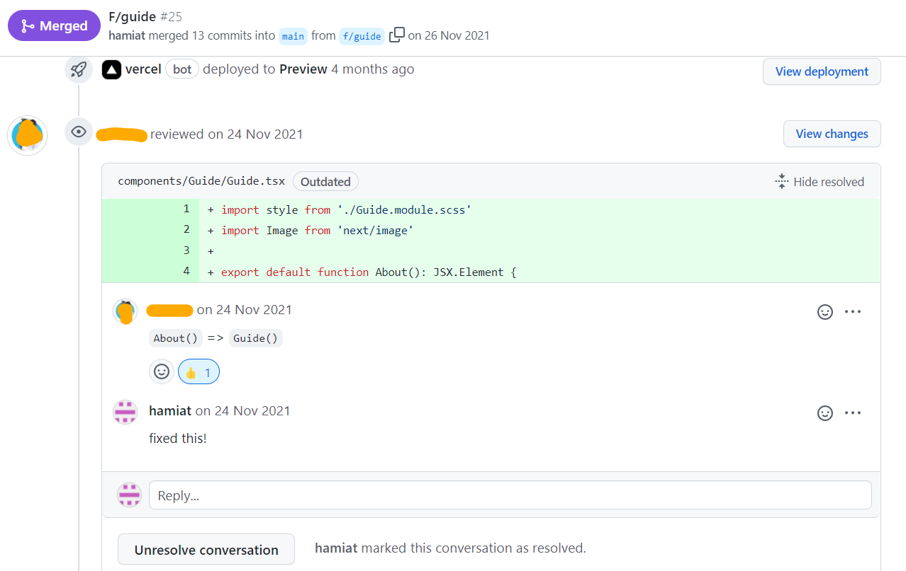

Slack board with automated CI/CD messages

During the fourth course period I had an internship at Judilica, a start-up that develops digital tools for legal work (mainly). The internship was fully remote and lasted for six months, during which I and a fellow intern had the task of creating the company's landing page from design to deployment (CI/CD). The frontend technologies (stack) that I worked with with during the internship were Next.js, React, TypeScript and Sass.
Judilica as a company is one that aim to work in an agile fashion. I noticed this from the very start at our introduction meeting with the team. The meeting started off with a small team development session and even though it was held online, I felt as though I was able to get to know and connect with the entire team. In regards to the five stages of group development (posited by Bruce Tuckman), this session took the new team constellation from forming to norming. This was really good because even though I was mainly in contact with our mentor, I still felt comfortable reaching out the other members of the team when it was necessary throughout the internship.
The entire team collaborated in Notion (in regards to planning) and we were assigned our own workspace for the landing page, which we were responsible of populating and maintaining. Below is a picture from the kanban board that I and the fellow intern created and maintained throughout the internship. The purpose of the kanban board was to help visualize work and maximize efficiency (flow). During the design phase we created the different tasks for the board directly in Notion, during the implementation phase the tasks were generated from our Github issues.
Kanban board

I also worked with Scrum throughout the project, working in iterations (1 - 4 weeks sprints). We started of each sprint by reviewing our backlog as well as discussing and deciding on the features that we were to implement for the sprint (sprint planning and creating a sprint backlog). Everyday we would have a daily stand-up where I shared briefly about my progress or struggles and what my aim was for the day. At the end of each sprint we would have an increment, during which we presented the work we had carried out to our mentor and receive feedback, which we would review at the start of the following sprint (sprint review and retrospective).
I also had the opportunity to learn more and work with test-driven development (TDD) during my internship. Throughout the project I continuously deployed (CI/CD) new branches using Github and Vercel to ensure that they worked properly before merging them with the main branch. Below is an image from our slack channel of automated messages from Vercel with two deployments that I made.
Slack board with automated CI/CD messages
I began each new feature/fix by creating a new branch for the feature/fix that I was going to develop. This enabled for a more manage way to conduct unit testing during the implementation, before the integration (TDD). Once I was done developing the first iteration of the feature/fix, I would push it to our remote repository and create a pull request in Github. My mentor would then review the code (static testing) and then share feedback on what could be improved. The process would then repeat until the pull request was approved. Before merging the pull request with main, I had to make sure that it passed a few Github Pull Request Checks that had been configured by our mentor, the most important being a successful deployment of the branch via Vercel. Once all the Checks were passed and conflicts resolved between the branch and the main branch, the branch was ready to me merged with main.
I also learned that whilst working with CI/CD, it was wise to run a build test locally to amend any build issues and errors before pushing the code. As well as configure auto formatting to avoid running into unnecessary conflicts, in particularly when working a project with multiple developer.
A pull request that I created

Code review and feedback

A successful local build

❇ Accessibility Guidelines (WCAG), in particularly when designing the landing page. Things such as checking the color contrast of the buttons with a color checking tool and increasing the font weight on smaller text to increase the accessibility visually. When working with the different animations on the page, I also took in consideration not to go overboard with the different effects for the same purpose.
❇ TypeScript (instead of JavaScript) which I consider to be a method of quality assurance when developing as it helps catch mistakes early through a type system and makes debugging easier.
TypeScript implementation

The landing page
One of the things that I found rewarding when it came to my internship was the opportunity to create the landing page from scratch and have responsibility for the entire development. This meant that I got the chance to choose work and project methodology, as well as make independent decisions about planning and work according to requirement specifications set by our mentor (our stakeholder). Below are a few occasions in regards this course goal.
Starting off I collaborated with my fellow intern to create backlog activities for the design process. The main activities that we planned and carried out were wire-framing, loFi and hiFi prototyping. The wire-framing we collaborated on and created together as we need to be on the same page when it came to which features were to be included on the landing page. The features that we decided on were based on the requirements in the project specification for the landing page, which we had received at the beginning of the project.
Wire-frame
After receiving approval from our stakeholder that the wire-frame met requirement (mainly that the required features and elements were included in the design), we decided to work individually on the loFi prototypes. This in order to provide our stakeholders with different design options and for us to gain a sense of what appealed to them visually. This helped us when it came to hiFi prototyping as the loFi design that they had settled for gave a good idea of what design style appealed to the stakeholders.
loFi prototype
hiFi prototype
Aside from the required features and elements in the project specification, the process requirements of the project was also specified in the project specification. Mainly deciding and diving everyday operations/work methods with an agile approach, as well as using a kanban board (in notion). When developing I utilized Github issues to create requirement specifications for both new features that I implemented as well as bug fixes. The issues were connected to our kanban board in notion.
Below is a screenshot of an issue that I created for correcting the overall responsiveness of the desktop version. In the issue I described the problem, how to reproduce it and then show the expected behavior vs current behavior. I then solved the issue at hand and created a pull request with the solutions that I used to solve the problem. Followed by merging the branch with the main branch once the pull request had been approved. For document purposes the issue I linked to the pull request.
Github Issue #20

Pull request for issue #20

I was fortunate to be assigned the internship with a fellow intern, who I had collaborated with before on a different project. We had worked really well together in the past so the team was already at norming when we kicked off the project. Working together from design to deployment (CI/CD) meant that we had to communicate a lot. We started off by exchanging our expectations for the internship which were aligned. Both of us wanted to learn as much as possible from the experience and utilize our mentorship to learn industry standards in regards to the different activities that we engaged with/in throughout the internship. Our mutual goal was to deliver a final product that our stakeholders could utilize or further develop. Aligning in this fashion early enabled for us to encourage each other throughout the internship and in moments where the motivation was low.
As the internship was fully remote and as we had to divide some of the tasks in able to work more effectively. I felt that it was important for us to maintain a good culture and did so by practicing open and honest communication . Due to the freedom, but also responsibility that came with having such a flexible workspace, I made sure to communicate whenever I had hindrances (those related to work but also personal ones) that would affect my work. eg. sharing when I wasn't feeling well and needed some to take the day off. By having daily we could adjust our sprints accordingly and set more realistic time management plans. Sharing in this fashion also enabled the team to provide with some encouragement when I felt low (and vice versa), which improved the overall efficiency of our team.
Sharing and receiving some encouragement from the team

As we had to work together, we opted for tools that allows for multiple users to work in the same document/program, Figma (for the design) and VSCode (for coding).In the beginning of the implementation phase, it was very important for us to work closely together as to ensure that we both were on board regarding the tasks at hand. We started off with header and implemented it together before dividing and individually working the remaining sections of the page. I think that this helped us synchronize more the project progressed, as we have agreed on the implementation structure together in the beginning.
Initially, I was a bit reluctant to pair-programming as I thought the practice to be time consuming and inefficient (two people working on one task). However I soon came to discover that there are a lot of benefits to having two people work on the same problem as I was able to learn a lot from my fellow intern. During these sessions I discovered that I was able to learn and share knowledge in a cohesive way (working with both verbal and visual feedback). This was particularly important during the initial design phase and when trying to align on the design language to use for the landing page.
Discord conversation with a VSCode live share
An important aspect of the internship for me personally was learning how to work and communicate efficiently in relation to our mentor (and stakeholders). When we initialized the project I specifically asked our mentor to openly and honestly share his feedback. This was due to the fact that I wanted to both improve my coding (write cleaner code) as well meet the requirements in a way that was satisfying to the stakeholders.
Advice on how to write better Sass
Starting off the project, the stakeholders did not have any concrete ideas for how they wanted the landing page to look like. All they knew was that they wanted to appeal to a broad audience. This meant that I and my fellow intern had to work in iterations and ask for feedback after each step (wire-framing, loFi & hiFi ). The feedback that was received we then continued to build upon. This also meant that I had to communicate an empathetic manner and remind the stakeholder that our job was to support their vision (and that I would not take offense if they wanted to go in a different direction). As the stakeholders also had access to our Figma files, they were able to follow the work that we were doing in real-time and come with relevant feedback as we were working (did not have to wait until our next meeting). I believed that practicing having transparency in this fashion helped the project move along more smoothly.
Providing different color theme options
As our mentor had other obligations, I felt that it was important to be mindful of our exchanges and how often they happened. I saw this as an opportunity for me to work more independently, as demonstrated in on how I worked with "overall responsiveness" issue in K5, where I created the issue and implemented a solution before asking what solution our mentor preferred in the pull request review. Him approving the of solution presented meant that we only needed to have one exchange regarding this bug fix.
During the implementation phase I made sure to openly communicate with our mentor whenever I ran into issues that I felt like were taking too long to solve or required their decisions-making for the progression of the project. At times I would inform our stakeholders that the task at hand required me to acquire some more knowledge either through their help directly or by taking an online course. Other times I would schedule a meeting with them for more in depth meeting regarding the issue at hand. Below is an exchange between me and my mentor during which I received some advice on how to solve an task.
Slack conversation between myself and my mentor